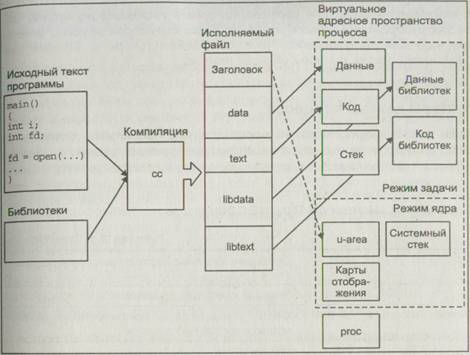
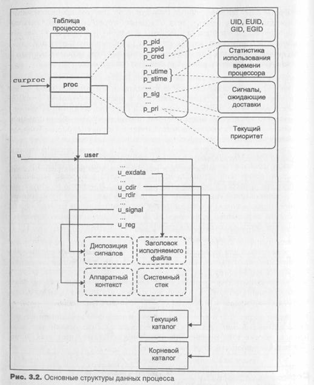
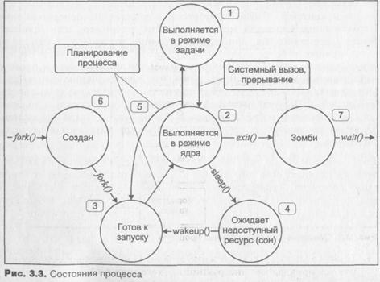

Сердцем операционной системы UNIX является подсистема управления процессами. Практически все действия ядра имеют отношение к процессам, будь то обслуживание системного вызова, генерация сигнала, размещение памяти, обработка особых ситуаций, вызванных выполнением процесса или обеспечением услуг ввода/вывода по запросу прикладного процесса.
Вся функциональность операционной системы в конечном счете определяется выполнением тех или иных процессов. Даже так называемые уровни выполнения системы (run levels) представляют собой ни что иное, как удобную форму определения группы выполняющихся процессов. Возможность терминального или сетевого доступа к системе, различные сервисы, традиционные для UNIX, — система печати, удаленные архивы FTP, электронная почта и система телеконференций (news) — все это результат выполнения определенных процессов.
В этой главе рассматриваются вопросы: что такое процесс в представлении операционной системы, каковы связанные с ним структуры данных, позволяющие UNIX осуществлять управление процессом, а также описывается жизненный цикл процесса — от его создания до прекращения выполнения.
Процессы в UNIX неотъемлемо связаны с двумя важнейшими ресурсами системы — процессором (или процессорами) и оперативной памятью. Как правило, этих ресурсов никогда не бывает "много", и в операционной системе происходит активная конкурентная борьба за право обладания процессором и памятью. Мы рассмотрим принципы организации и управле-Чия памятью, т. к. даже при самом умеренном объеме физической памяти адресное пространство процесса составляет несколько гигабайт! Мы также \ подробно остановимся на том, как операционная система планирует выполнение процессов — ведь в каждый момент времени в однопроцессорной системе UNIX может выполняться не более одного процесса. UNIX является многозадачной системой общего назначения, поэтому задача справедливого распределения этого ресурса между задачами различного класса и с различными требованиями является нетривиальной.
Мы познакомимся с тем, как создаются новые процессы и запускаются новые программы (из предыдущих глав вы помните, что это не одно и то же). По существу процесс является "рамкой", в которую необходимо вста вить "картину" или "фотографию" - некоторую прикладную программу. В этой главе рассматриваются важные этапы жизни процесса, такие как сон и пробуждение, переключение контекста, связанного со сменой задачи завершение его выполнения.
Последние разделы главы посвящены взаимодействию между процессами Хотя основной задачей операционной системы является изоляция отдельного процесса от остальных, время от времени процессам все же требуется обмениваться данными. Для этого UNIX предлагает широкий спектр средств - от элементарного механизма сигналов до сложных подсистем межпроцессного взаимодействия — IPC UNIX System V и сокетов BSD.
Уже говорилось, что процесс UNIX представляет собой исполняемый образ программы, включающий отображение в памяти исполняемого файла, полученного в результате компиляции, стек, код и данные библиотек, а также ряд структур данных ядра, необходимых для управления процессом. На рис. 3.1 схематически представлены компоненты, необходимые для создания и выполнения процесса. Процесс во время выполнения использует различные системные ресурсы -память, процессор, услуги файловой подсистемы и подсистемы ввода/вывода. Операционная система UNIX обеспечивает иллюзию одновременного выполнения нескольких процессов, эффективно распределяя системные ресурсы между активными процессами и не позволяя в то же время ни одному из них монополизировать использование этих ресурсов.
Новорожденная операционная система UNIX обеспечивала выполнение всего двух процессов, по одному на каждый подключенный к PDP-7 терминал. Спустя год, на той же PDP-7 число процессов заметно увеличилось, появился системный вызов fork(2). В Первой редакции UNIX появился вызов ехес(2), но операционная система по-прежнему позволяла размещать в памяти только один процесс в каждый момент времени. После реализации аппаратной подсистемы управления памятью на PDP-11 операционная система была модифицирована, что позволило загружать в память сразу несколько процессов, уменьшая тем самым время на сохранение образа процесса во вторичной памяти (на диске) и считывание его, когда процесс продолжал выполнение. Однако до 1972 года UNIX нельзя было назвать действительно многозадачной системой, т. к. операции ввода/вывода оставались синхронными, и другие процессы не могли выполняться, пока их "коллега" не завершал операцию ввода/вывода (обычно достаточно продолжительную). Истинная многозадачность появилась только после того, как код UNIX был переписан на языке С в 1973 году. С тех пор основы управления процессами практически не изменились.
Рис. 3.1. Инфраструктура процесса операционной системы UNIX
Выполнение процесса может происходить в двух режимах — в режиме ядра (kernel mode) или в режиме задачи (user mode). В режиме задачи процесс выполняет инструкции прикладной программы, допустимые на непривилегированном уровне защиты процессора. При этом процессу недоступны системные структуры данных. Когда процессу требуется получение каких-либо услуг ядра, он делает системный вызов, который выполняет инструкции ядра, находящиеся на привилегированном уровне. Несмотря на то что выполняются инструкции ядра, это происходит от имени процесса, сделавшего системный вызов. Выполнение процесса при этом переходит в режим ядра. Таким образом ядро системы защищает собственное адресное пространство от доступа прикладного процесса, который может нарушить Целостность структур данных ядра и привести к разрушению операционной системы. Более того, часть процессорных инструкций, например, изменение регистров, связанных с управлением памятью, могут быть выполнены только в режиме ядра.
Соответственно и образ процесса состоит из двух частей: данных режима ядра и режима задачи. Образ процесса в режиме задачи состоит из сегмента кода, данных, стека, библиотек и других структур данных, к которым он может получить непосредственный доступ. Образ процесса в режиме ядра состоит из структур данных, недоступных процессу в режиме задачи, которые используются ядром для управления процессом. Сюда относятся данные, диктуемые аппаратным уровнем, например состояния регистров, таблицы для отображения памяти и т. д., а также структуры данных, необходимые ядру для обслуживания процесса. Вообще говоря, в режиме ядра процесс имеет доступ к любой области памяти.
Каждый процесс представлен в системе двумя основными структурами
данных ргос и user, описанными, соответственно, в файлах
|
char |
p_stat |
Состояние процесса (выполнение, приостановлен, сон и т. д.) |
|
|
char |
p_pri |
Текущий
приоритет процесса |
|
|
unsigned int |
p_flag |
Флаги, определяющие дополнительную инфор-мацию о состоянии
процесса |
|
|
unsigned short |
p_uid |
UID процесса |
|
|
unsigned short |
p_suid |
EUID процесса |
|
|
int |
p_sid |
Идентификатор сеанса |
|
|
short |
p_pgrp |
Идентификатор группы
процессов (равен иден-тификатору лидера группы) |
|
|
short |
p_pid |
Идентификатор процесса (РID) |
|
|
short |
p_ppid |
Идентификатор родительского процесса (PPID) |
|
|
sigset_t |
p_sig |
Сигналы,
ожидающие доставки |
|
|
unsigned int |
p_size |
Размер адресного пространства процесса в страницах |
|
|
time_t
|
p_utime |
Время выполнения в режиме задачи |
|
|
time_t
|
p_stime |
Время выполнения в режиме ядра |
|
|
caddr_t
|
p_ldt |
Указатель
на LDT процесса |
|
|
struct pregion |
*p_region |
Список
областей памяти процесса |
|
|
short |
p_xstat |
Код возврата, передаваемый родительскому процессу |
|
|
unsigned int |
p_utbl [] |
Массив записей таблицы страниц для u-area |
|
|
|
|
||
В любой момент времени данные структур ргос для всех процессов долж-ны присутствовать в памяти, хотя остальные структуры данных, включая образ процесса, могут быть перемещены во вторичную память, — область свопинга. Это позволяет ядру иметь под рукой минимальную информацию, необходимую для определения местонахождения остальных данных, относящихся к процессу, даже если они отсутствуют в памяти.
Структура ргос является записью системной таблицы процессов, которая, как мы только что заметили, всегда находится в оперативной памяти. Запись этой таблицы для выполняющегося в настоящий момент времени процесса адресуется системной переменной curproc. Каждый раз при переключении контекста, когда ресурсы процессора передаются другому процессу, соответственно изменяется значение переменной curproc, которая теперь указывает на структуру ргос активного процесса.
Вторая упомянутая структура — user, также называемая u-area или u block, содержит дополнительные данные о процессе, которые требуются ядру только во время выполнения процесса (т. е. когда процессор выполняет инструкции процесса в режиме ядра или задачи). В отличие от структуры ргос, адресованной указателем curproc, данные user размещаются (точнее, отображаются) в определенном месте виртуальной памяти ядра и адресуются переменной и. На рис. 3.2 показаны две основные структуры данных процесса и способы их адресации ядром UNIX.
В u-area хранятся данные, которые используются многими подсистемами ядра и не только для управления процессом. В частности, там содержится информация об открытых файловых дескрипторах, диспозиция сигналов, статистика выполнения процесса, а также сохраненные значения регистров, когда выполнение процесса приостановлено. Очевидно, что процесс не должен иметь возможности модифицировать эти данные произвольным образом, поэтому u-area защищена от доступа в режиме задачи.
Как видно из рис. 3.2, u-area также содержит стек фиксированного разме-- системный стек или стек ядра (kernel stack). При выполнении процесса в режиме ядра операционная система использует этот стек, а не обычный стек процесса.
Жизненный цикл процесса может быть разбит на несколько состояний. Переход процесса из одного состояния в другое происходит в зависимости от наступления тех или иных событий в системе. На рис. 3.3 показаны состояния, в которых процесс может находиться с момента создания до завершения выполнения.
1. Процесс выполняется в режиме задачи. При этом процессором выпол няются прикладные инструкции данного процесса.
2. Процесс выполняется в режиме ядра. При этом процессором выпол няются системные инструкции ядра операционной системы от имени процесса.
3. Процесс не выполняется, но готов к запуску, как только планировщик выберет его (состояние runnable). Процесс находится в очереди на вы полнение и обладает всеми необходимыми ему ресурсами, кроме вы числительных.
4. Процесс находится в состоянии сна (asleep), ожидая недоступного в данный момент ресурса, например завершения операции вво да/вывода.
5. Процесс возвращается из режима ядра в режим задачи, но ядро пре рывает его и производит переключение контекста для запуска более высокоприоритетного процесса.
6. Процесс только что создан вызовом fork(2) и находится в переходном состоянии: он существует, но не готов к запуску и не находится в со стоянии сна.
7. Процесс выполнил системный вызов exit(2) и перешел в состояние зомби (zombie, defunct). Как такового процесса не существует, но ос таются записи, содержащие код возврата и временную статистику его выполнения, доступную для родительского процесса. Это состояние является конечным в жизненном цикле процесса.
Необходимо отметить, что не все процессы проходят через все множество состояний, приведенных выше.
Процесс начинает свой жизненный путь с состояния 6, когда родительский процесс выполняет системный вызов fork(2). После того как создание процесса полностью завершено, процесс завершает "дочернюю часть" вызова fork(2) и переходит в состояние 3 готовности к запуску, ожидая своей очереди на выполнение. Когда планировщик выбирает процесс для выполнения, он переходит в состояние 1 и выполняется в режиме задачи.
Выполнение в режиме задачи завершается в результате системного вызова или прерывания, и процесс переходит в режим ядра, в котором выполняется код системного вызова или прерывания. После этого процесс опять может вернуться в режим задачи. Однако во время выполнения системного вызова в режиме ядра процессу может понадобиться недоступный в данный момент ресурс. Для ожидания доступа к такому ресурсу, процесс вызывает функцию ядра sleep () и переходит в состояние сна (4). При этом процесс добровольно освобождает вычислительные ресурсы, которые предоставляются следующему наиболее приоритетному процессу. Когда ресурс становится доступным, ядро "пробуждает процесс", используя функцию wakeup (), помещает его в очередь на выполнение, и процесс переходит в состояние "готов к запуску"(3).
При предоставлении процессу вычислительных ресурсов происходит переключение контекста (context switch), в результате которого сохраняется образ, или контекст, текущего процесса, и управление передается новому. Переключение контекста может произойти, например, если процесс перешел в состояние сна, или если в состоянии готовности к запуску находится процесс с более высоким приоритетом, чем текущий. В последнем случае ядро не может немедленно прервать текущий процесс и произвести переключение контекста. Дело в том, что переключению контекста при выполнении в режиме ядра может привести к нарушению целостности самой системы. Поэтому переключение контекста откладывается до момента перехода процесса из режима ядра в режим задачи, когда все системные операции завершены, и структуры данных ядра находятся в нормальном состоянии. Таким образом, после того как планировщик выбрал процесс на запуск, последний начинает свое выполнение в режиме ядра, где завершает переключение контекста. Дальнейшее состояние процесса зависит от его предыстории: если процесс был только что создан или был прерван, возвращаясь в режим задачи, он немедленно переходит в этот режим. Если процесс начинает выполнение после состояния сна, он продолжает выполняться в режиме ядра, завершая системный вызов. Заметим, что такой процесс может быть прерван после завершения системного вызова в момент перехода из режима ядра в режим задачи, если в очереди существует более высокоприоритетный процесс.
В UNIX 4.xBSD определены дополнительные состояния процесса, в первую очередь связанные с системой управления заданиями и взаимодействием процесса с терминалом. Процесс может быть переведен в состояние "остановлен" с помощью сигналов останова SIGSTOP, sigttin или sigttou. В отличие от других сигналов, которые обрабатываются только для выполняющегося процесса, отправление этих сигналов приводит к немедленному изменению состояния процесса1. В этом случае, если процесс выполняется или находится в очереди на запуск, его состояние изме^ няется на "остановлен". Если же процесс находился в состоянии сна, его состояние изменится на "остановлен в состоянии сна". Выход из этих состояний осуществляется сигналом продолжения SIGCONT, при этом из состояния "остановлен" процесс переходит в состояние "готов к запуску", а для процесса, остановленного в состоянии сна, следующим пунктом назначения является продолжение "сна". Описанные возможности полностью реализованы и в SVR4.
Наконец, процесс выполняет системный вызов exit(2) и заканчивает свое выполнение. Процесс может быть также завершен вследствие получения сигнала. В обоих случаях ядро освобождает ресурсы, принадлежавшие процессу, за исключением кода возврата и статистики его выполнения, и переводит процесс в состояние "зомби". В этом состоянии процесс находится до тех пор, пока родительский процесс не выполнит один из системных вызовов wait(2), после чего вся информация о процессе будет уничтожена, а родитель получит код возврата завершившегося процесса.
Принципы управления памятьюОдной из основных функций операционной системы является эффективное управление памятью. Оперативная память, или основная память, или память с произвольным доступом (Random Access Memory, RAM) является достаточно дорогостоящим ресурсом. Время доступа к оперативной памяти составляет всего несколько циклов процессора, поэтому работа с данными, находящимся в памяти, обеспечивает максимальную производительность. К сожалению, данный ресурс, как правило, ограничен. В большей степени это справедливо для многозадачной операционной системы общего назначения, каковой является UNIX. Поэтому данные, которые не могут быть размещены в оперативной памяти, располагаются на вторичных устройствах хранения, или во вторичной памяти, роль которой обычно выполняют дисковые накопители. Время доступа ко вторичной памяти на несколько порядков превышает время доступа к оперативной памяти и требует активного содействия операционной системы.
Существует исключение из этого правила, касающееся процессов, находящихся в состоянии сна для низкоприоритетного события, т. е. события, вероятность наступления которого относительно мала (например, ввода с клавиатуры, который может и не наступить). В этом случае отправление процессу сигнала приведет к его пробуждению. Более подробно этот случай рассмотрен в разделе "Сигналы" этой главы.
памятью UNIX отвечает за справедливое и эффективное распределение разделяемого ресурса оперативной памяти между процессами и за обмен данными между оперативной и вторичной памятью. Часть операций про изводится аппаратно устройством управления памятью (Memory Management Unit, MMU) процессора под управлением операционной сиc темы, чем достигается требуемое быстродействие. Примитивное управление памятью значительно уменьшает функциональ ность операционной системы. Такие системы, как правило, позволяют загрузить в заранее определенное место в оперативной памяти единствен ную задачу и передать ей управление. При этом задача получает в своем распоряжение все ресурсы компьютера (разделяя их, разумеется, с опера ционной системой), а адреса, используемые задачей, являются физически-ми адресами оперативной памяти. Такой способ запуска и выполнения одной программы безусловно является наиболее быстрым и включает ми-нимальные накладные расходы.
Этот подход часто используется в специализированных микропроцессор-ных системах, однако практически неприменим в операционных системах общего назначения, какой является UNIX. Можно сформулировать ряд возможностей, которые должна обеспечивать подсистема управления памятью современной многозадачной операционной системы:
- Выполнение задач, размер которых превышает размер оперативной памяти.
- Выполнение частично загруженных в память задач для минимизации времени их запуска.
- Размещение нескольких задач в памяти одновременно для повышения эффективности использования процессора.
- Размещение задачи в произвольном месте оперативной памяти.
- Размещение задачи в нескольких различных частях оперативной памяти.
- Совместное использование несколькими задачами одних и тех же областей памяти.
Например, несколько процессов, выполняющих одну и ту же программу, могут совместно использовать сегмент кода.
Все эти возможности реализованы в современных версиях UNIX с помощью т. н. виртуальной памяти, о которой пойдет речь в следующем подразделе. Виртуальная память не является "бесплатным приложением", повышая накладные расходы операционной системы: структуры данных управления памятью размещаются в оперативной памяти, уменьшая ее размер; управление виртуальной памятью процесса может требовать ресур' соемких операций ввода/вывода; для системы со средней загрузкой около 7% процессорного времени приходится на подсистему управления памятью. Поэтому от эффективности реализации и работы этой подсистемы во многом зависит производительность операционной системы в целом.